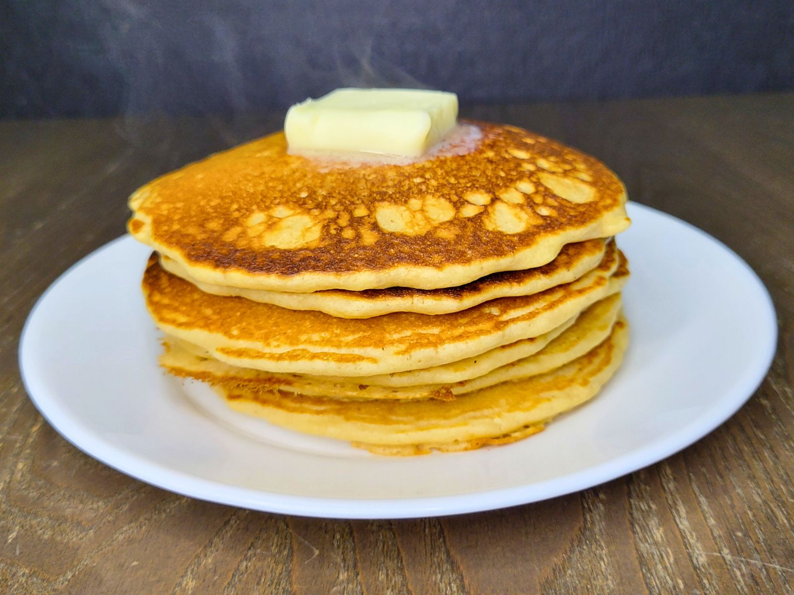

Pancakes

Description
A very light and fluffy pancake recipe that requires fresh buttermilk, but it's the best!
Ingredients
- 3 cups all-purpose flour
- 3 tablespoons white sugar
- 3 teaspoons baking powder
- 1.5 teaspoons baking soda
- 0.75 teaspoon salt
- 3 cups buttermilk
- 0.5 cup milk
- 3 eggs
- 0.3 cup butter, melted
Steps
- Combine flour, sugar, baking powder, baking soda, and salt into a large bowl. Beat together buttermilk, milk, eggs and melted butter in a different bowl. Keep separate until ready to cook.
- Heat a lightly oiled griddle or frying pan over medium-high heat.
- Pour mixtures together, mixing with wooden spoon or fork until blended. Batter should be a bit lumpy.
- Pour or Scoop the batter onto the preheated griddle using ~0.5 cups for each pancake. Cook until bubbles appear on the surface (~1-2 minutes). Flip and cook until brown on the other side.
- Serve and Enjoy
Home
Cookies
Burgers